STL, итераторы и алгоритмы
Контейнеры, полуоткрытые диапазоны и выбор операций.
STL итераторы и основные алгоритмы
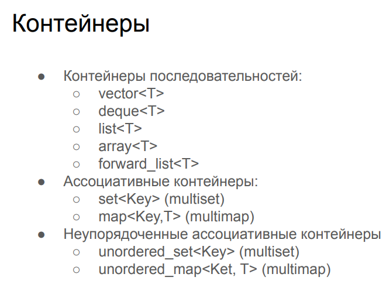
Контейнер std::array в C++ (STL) — это безопасная и удобная обёртка над обычными статическими массивами, предоставляющая фиксированный размер, известный на этапе компиляции. Он хранит элементы одного типа в непрерывной области памяти, обычно на стеке, обеспечивая быстрый доступ по индексу, но не позволяя изменять свой размер (добавлять или удалять элементы) в ходе работы.
В контексте контейнера map (например, в C++) слово «упорядоченный» означает, что элементы внутри него всегда выстроены в строгом порядке возрастания ключей.
Обычно упорядоченный map реализован в виде красно-черного дерева (сбалансированного бинарного дерева поиска). Именно структура дерева поддерживает этот порядок при каждой вставке.
порядок возрастания ключей
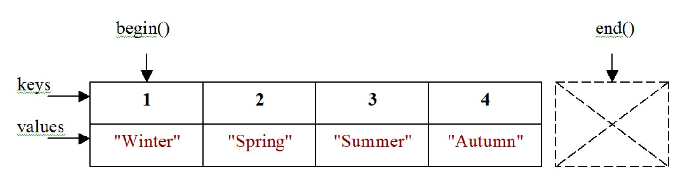
int main() {
std::vector<int> vec = {1, 2, 3, 4, 5, 6};
for (auto i = vec.begin(); i < vec.end(); i++) {
std::cout << *i << ' ';
}
}int main() {
std::map<std::string, int> map = {{"Alice", 18}, {"Bob", 200}};
for (auto it = map.cbegin(); it != map.cend(); it++) {
std::cout << it->first << ' ';
}
}
int main() {
std::string a = "этот день был этот день когда мы ждали мы ждали";
std::map<std::string, int> t;
std::stringstream ss(a);
std::string temp;
int count = 1;
while (ss >> temp) {
t[temp]++;
}
}#include <algorithm>
#include <iostream>
#include <vector>
int main() {
std::vector<int> vec = {1, 2, 3, 4};
std::reverse(vec.begin(), vec.end());
for (auto i = vec.cbegin(); i < vec.cend(); i++) {
std::cout << *i << ' ';
}
}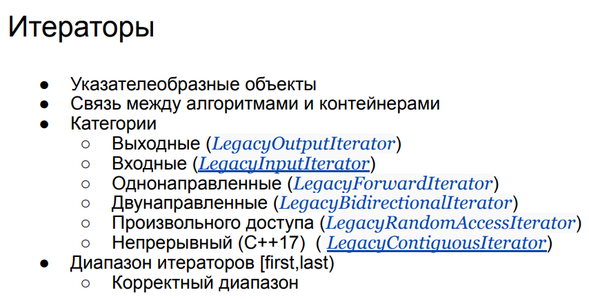
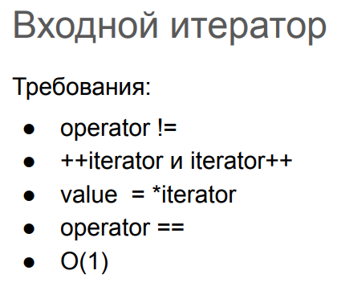
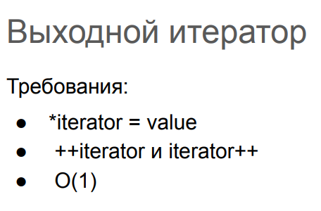
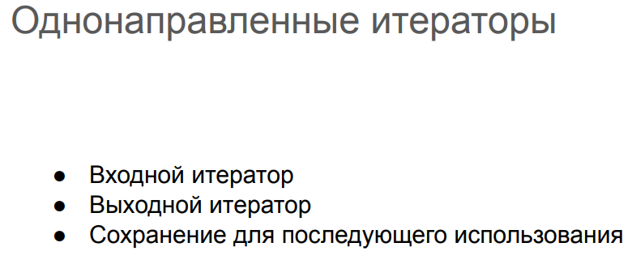
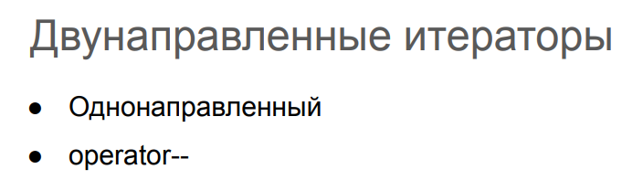
Итераторы с произвольным доступом
Итератор с произвольным доступом поддерживает смещение на заданное число позиций за O(1).
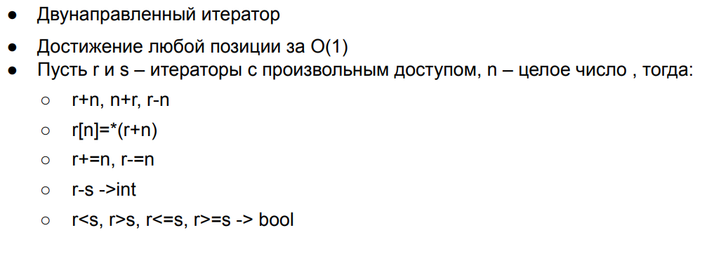
это операции с ними
Непрерывный итератор
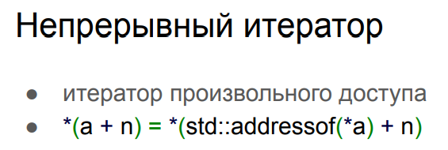
std::addressof — это шаблонная функция в C++ (определена в заголовке <memory>), которая возвращает точный адрес объекта, даже если для его класса перегружен оператор взятия адреса operator&. Она гарантирует получение указателя на объект , избегая перегруженных операторов, что критично для безопасной работы обобщенного кода.
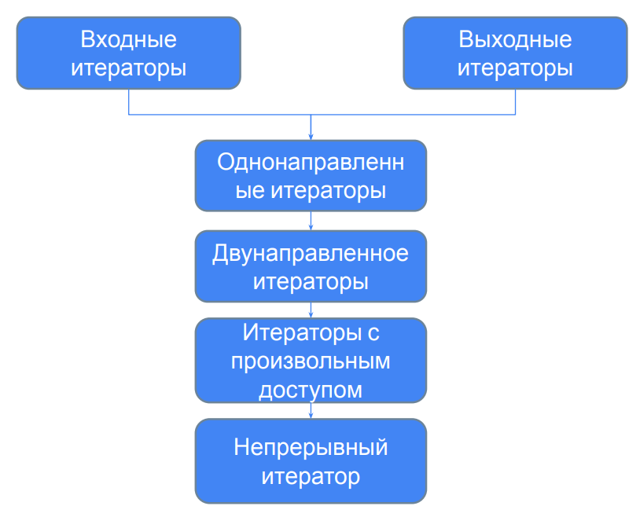
iterator / const_iterator
cbegin cend
Итератор
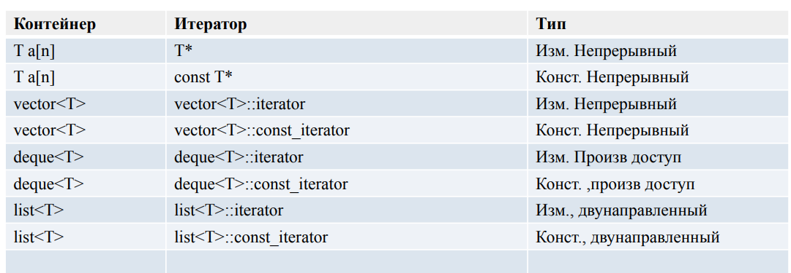
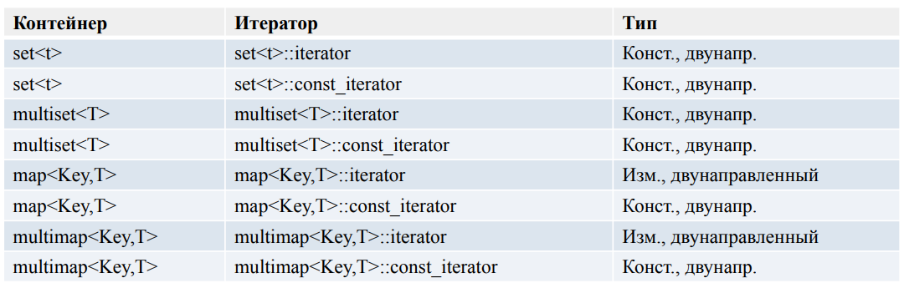
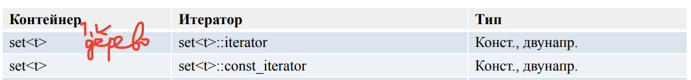
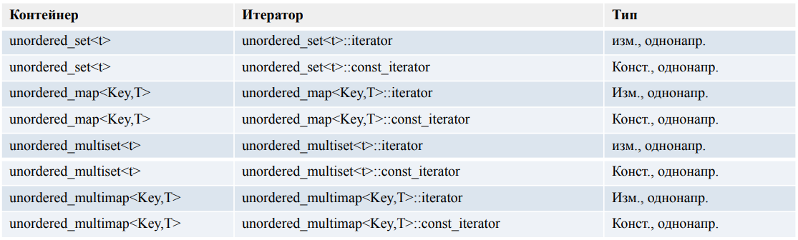
NB
std::find std::greater<>
Обобщенные числовые алгоритмы
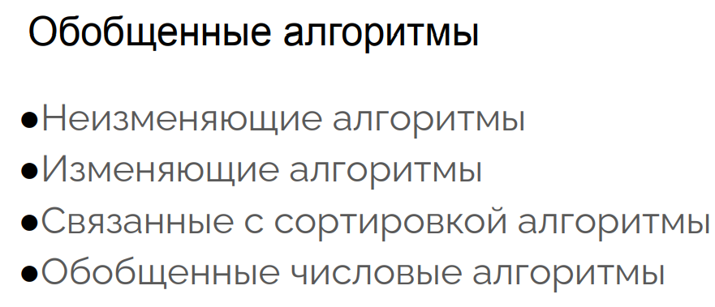
Алгоритмы с предикатами
std::sort( v1.begin(), v1.end(), greater());
выполняет сравнение двух элементов на «больше» (x > y).
std::sort( v1.begin(), v1.end(), std::less());
выполняет операцию «меньше» (<) над двумя аргументами.
Неизменяющие алгоритмы
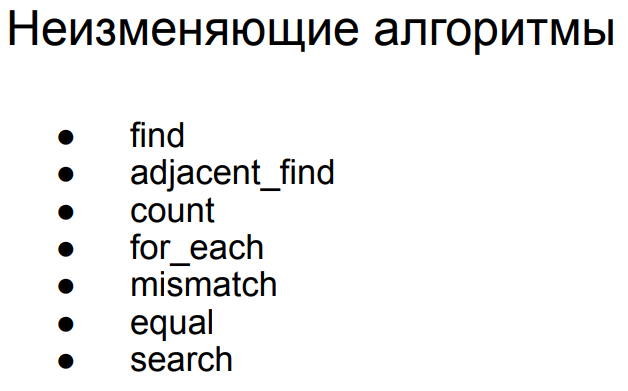
find и find_if
std::find_if — это алгоритм стандартной библиотеки C++ (STL), предназначенный для поиска первого элемента в диапазоне, удовлетворяющего заданному условию (предикату).
int main() {
std::vector<int> v = {1, 3, 5, 8, 10};
// Поиск первого четного числа
auto it = std::find_if(v.begin(), v.end(), [](int i) { return i % 2 == 0; });
if (it != v.end()) {
std::cout << "Найдено: " << *it << std::endl; // Выведет 8
}
return 0;
}count и count_if
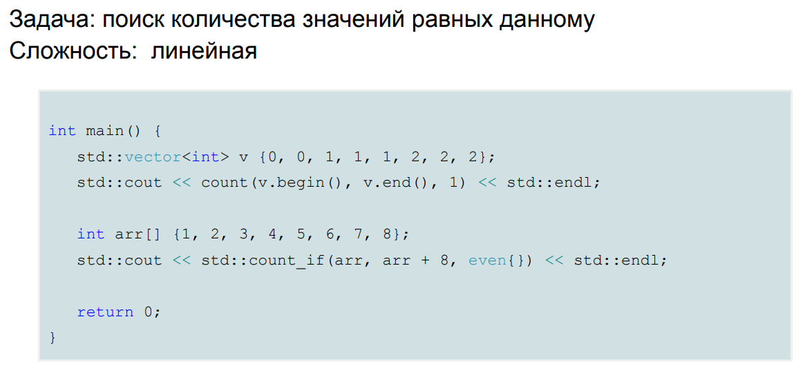
int predicat(int& x) {
return x % 2 == 0;
}
int main() {
std::vector<int> a = {1, 3 , 4};
auto i = std::count_if(a.begin(), a.end(), predicat);
std::cout << i;
}std::for_each
std::for_each в C++ — это алгоритм из библиотеки <algorithm>, применяющий заданную функцию (или лямбду) к каждому элементу в диапазоне (контейнере).
void predicat(int& x) {
x += 10;
}
int main() {
std::vector<int> a = {1, 2, 3 , 4};
std::for_each(a.begin(), a.end(), predicat);
for (int i : a) {
std::cout << i << ' ';
}
}std::mismatch
std::mismatch в C++ — это алгоритм из стандартной библиотеки (<algorithm>), предназначенный для сравнения двух диапазонов данных и поиска первого места, где элементы различаются.
int main() {
std::vector<int> a = {1, 3, 4};
std::vector<int> b = {1, 2, 5};
auto i = std::mismatch(a.begin(), a.end(), b.begin());
std::cout << *(i.first) << ' ' << *(i.second);
}std::equal
std::equal в C++ — это алгоритм из стандартной библиотеки (заголовочный файл <algorithm>), который используется для проверки того, равны ли элементы в двух диапазонах.
int main() {
std::vector<int> a = {1, 3, 4};
std::vector<int> b = {1, 2, 5};
if (std::equal(a.begin(), a.end(), b.begin())) std::cout << true;
else std::cout << false;
}search
std::search в C++ — это алгоритм из стандартной библиотеки (<algorithm>), предназначенный для поиска первого вхождения одной последовательности элементов (подпоследовательности) внутри другой.
std::distance — это функция из <iterator>, которая вычисляет **расстояние между двумя итераторами.
int main() {
std::vector<int> a = {1, 3, 4};
std::vector<int> b = {1, 3};
auto it = std::search(a.begin(), a.end(),
b.begin(), b.end());
if (it != a.end()) {
int index = std::distance(a.begin(), it);
std::cout << "Found at index: " << index << "\n";
} else {
std::cout << "Not found\n";
}
}Изменяющие алгоритмы
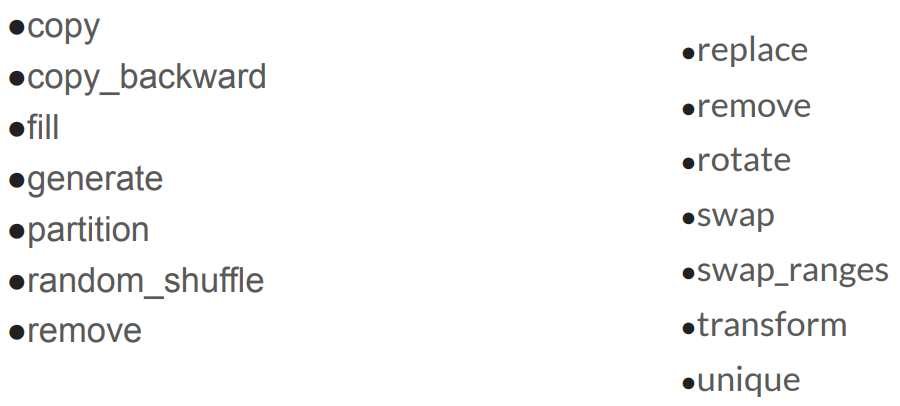
copy
int main() {
std::vector<int> a = {1, 3, 4};
std::vector<int> b(a.size()); // создаём нужный размер
std::copy(a.begin(), a.end(), b.begin());
for (int i : b) {
std::cout << i << " ";
}
}copy_backward
std::copy_backward в C++ — это алгоритм из стандартной библиотеки (заголовочный файл <algorithm>), предназначенный для копирования элементов из одного диапазона в другой, начиная с конца исходного диапазона и двигаясь к началу.
int main() {
std::vector<int> a = {1, 3, 4};
std::vector<int> b(a.size() + 5);
std::copy_backward(a.begin(), a.end(), b.end());
for (int i : b) {
std::cout << i;
}
}fill \ fill_n
заполняет значения
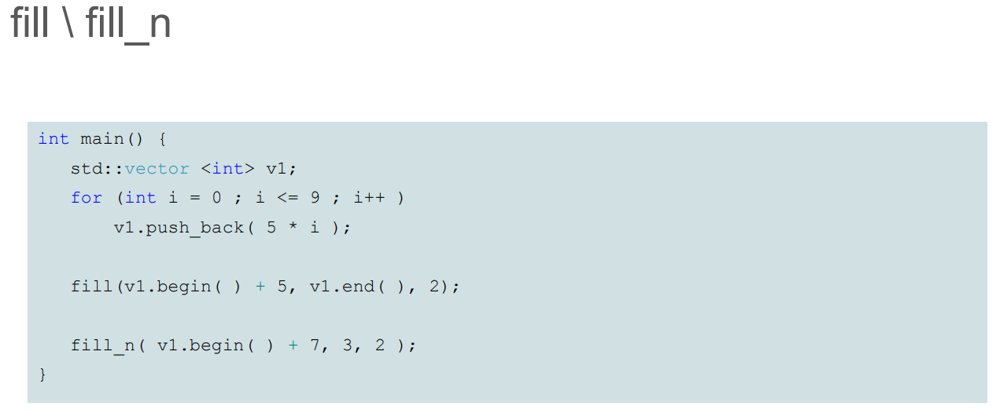
Главное отличие заключается в способе указания диапазона заполнения: std::fill использует пару итераторов (начало и конец), а std::fill_n использует начальный итератор и счетчик элементов.
generate
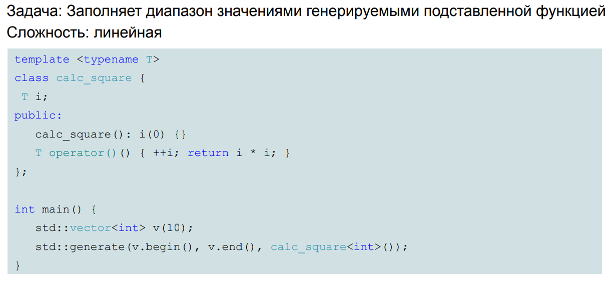
partition
В C++ std::partition — это алгоритм из библиотеки <algorithm>, который переупорядочивает элементы в диапазоне так, что элементы, удовлетворяющие условию (предикату), перемещаются в начало, а остальные — в конец.
int predicat(int& i) {
return i % 2 == 0;
}
int main() {
std::vector<int> a = {1, 2, 3, 4, 5, 6};
std::partition(a.begin(), a.end(), predicat);
for (int& i : a) {
std::cout << i << ' ';
}
}std::random_shuffle
std::random_shuffle в C++ — это алгоритм из стандартной библиотеки (<algorithm>), предназначенный для случайного переупорядочивания элементов в контейнере
int main() {
std::vector<int> a = {1, 2, 3, 4, 5, 6};
std::random_shuffle(a.begin(), a.end());
for (int& i : a) {
std::cout << i << ' ';
}
}erase\remove
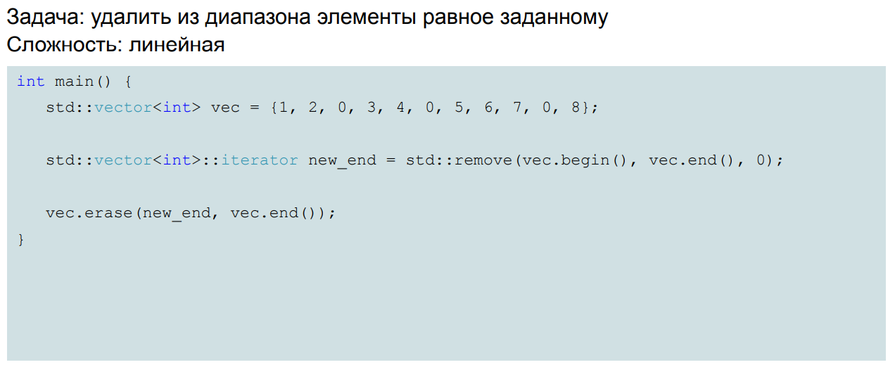
remove переносит элементы в конец а erase уже удаляет диапазон от..до
int main() {
std::vector<int> a = {0, 2, 3, 0, 5, 6, 0, 0};
std::remove(a.begin(), a.end(), 0);
a.erase(a.end());
for (int& i : a) {
std::cout << i << ' ';
}
}
2 3 5 6 5 6 0replace
int main() {
std::vector<std::string> a = {"cat", "dog"};
std::replace(a.begin(), a.end(), "cat", "dog");
for (std::string& i : a) {
std::cout << i << ' ';
}
}rotate
std::rotate в C++ — это алгоритм из стандартной библиотеки (<algorithm>), который переставляет элементы в диапазоне [first, last) так, что элемент, указанный итератором middle, становится первым, а элементы до него переносятся в конец.
int main() {
std::vector<int> a = {1, 2, 3, 4, 5};
std::rotate(a.begin(), a.end() - 2, a.end());
for (int& i : a) {
std::cout << i << ' ';
}
}swap_ranges
int main() {
std::vector<int> a = {1, 2, 3, 4, 5};
std::swap_ranges(a.begin(), a.begin() + 2, a.end() - 2);
for (int& i : a) {
std::cout << i << ' ';
}
}transform
std::transform в C++ — это алгоритм из стандартной библиотеки (<algorithm>), который применяет заданную функцию (унарную или бинарную) к элементам одного или двух диапазонов и записывает результат в выходной итератор.
int predicat(int i) {
return i * i;
}
int main() {
std::vector<int> a = {1, 2, 3, 4, 5};
std::vector<int> b(a.size());
std::transform(a.begin(), a.end(), b.begin(), predicat);
for (int i : b) {
std::cout << i << ' ';
}
}unique
std::unique для удаления дубликатов в контейнерах
int main() {
std::vector<int> a = {1, 2, 2, 2, 5};
std::unique(a.begin(), a.end());
for (int i : a) {
std::cout << i << ' ';
}
}Теоретико-множественные операции
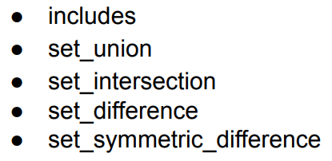
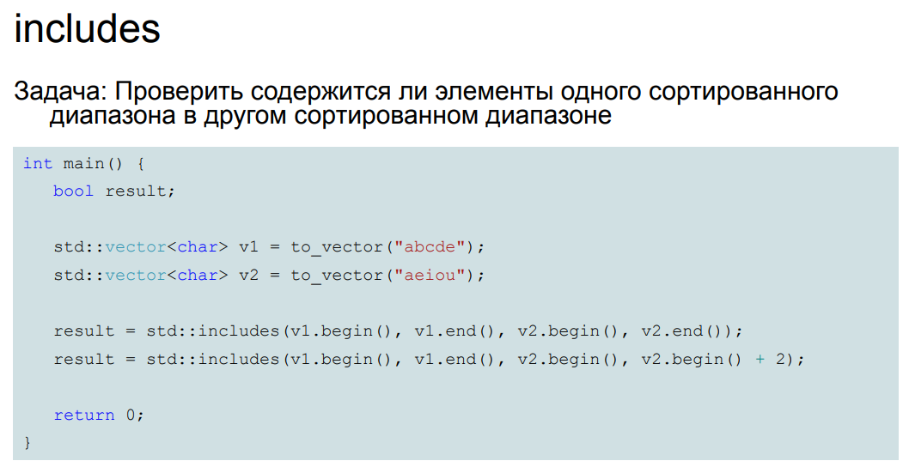
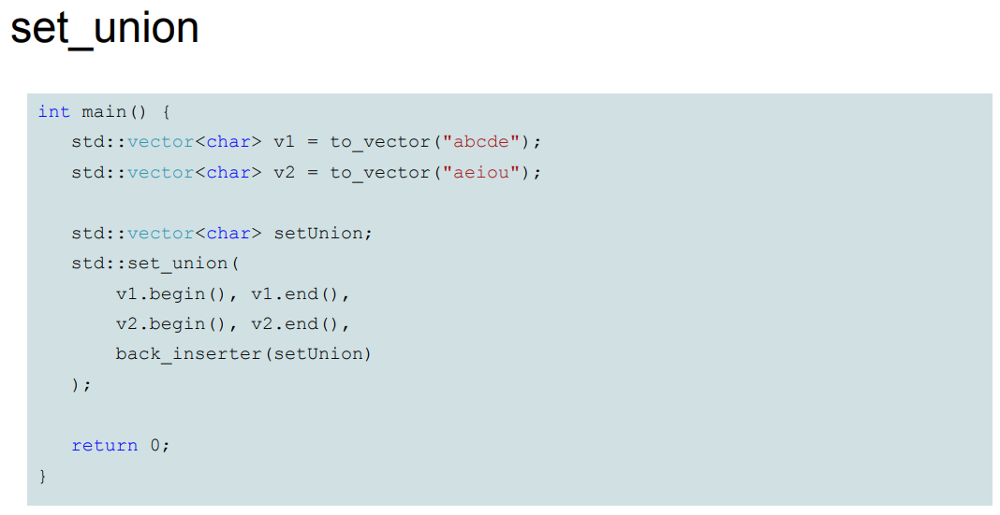
std::set_union в C++ — это алгоритм из библиотеки <algorithm>, который создает отсортированное объединение двух упорядоченных диапазонов.
int main() {
std::vector<int> v1 = {1, 2, 3, 4};
std::vector<int> v2 = {3, 4, 5, 6};
std::vector<int> dest;
std::set_union(v1.begin(), v1.end(),
v2.begin(), v2.end(),
std::back_inserter(dest));
// Результат dest: {1, 2, 3, 4, 5, 6}
return 0;
}Обобщенные числовые алгоритмы
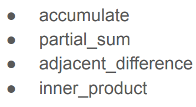
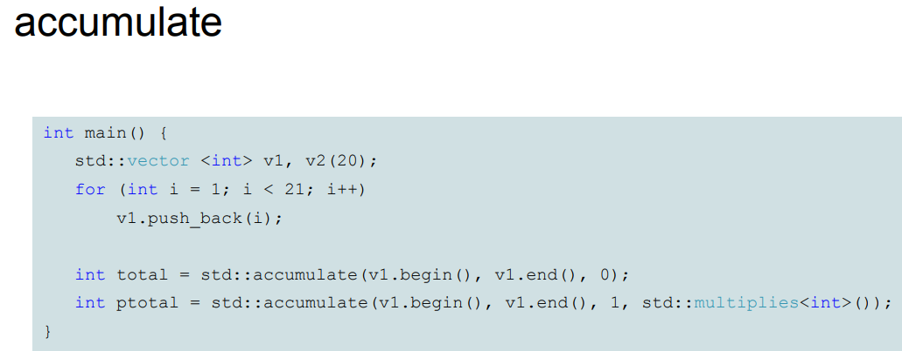
std::accumulate (из заголовка <numeric>) — это алгоритм C++, который вычисляет сумму или накапливает другой результат, последовательно применяя операцию (по умолчанию сложение) к элементам диапазона, начиная с заданного начального значения.
1 + 2 + 3 + 4 и т.д.
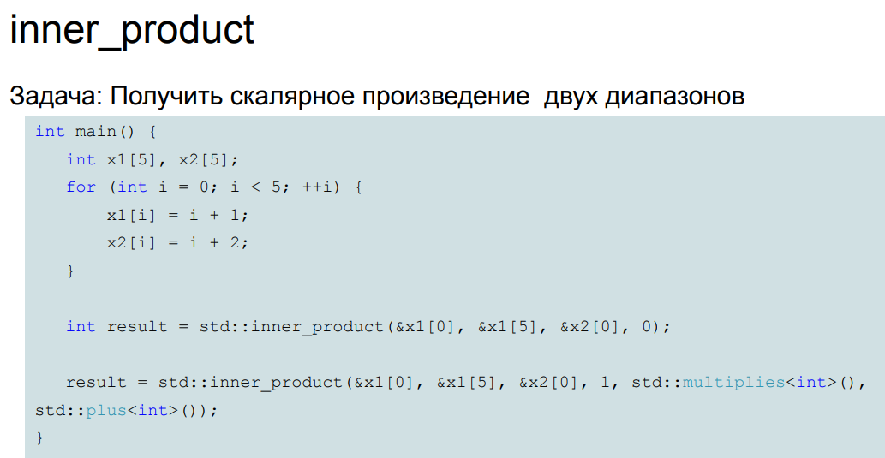